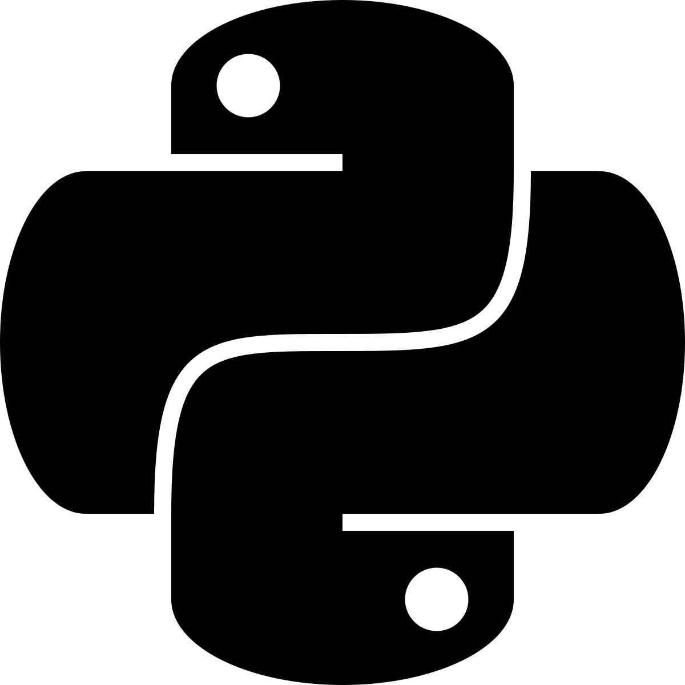

Python is a fully interpreted language, meaning lines of code are executed as they are read. The user has freedom to use Python in a procedural way or an object-oriented way. Python is much more similar to English than the two previously mentioned languages.

- Currently very popular to use in personal software development projects.
- Its most common use-cases include system scripting, math, server-side web development, etc.
- Designed with readability in mind, given its similarities to both English and mathematics.